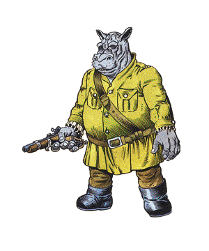

Giff

CLIMATE/TERRAIN:
| Any
|
FREQUENCY:
| Rare
|
ORGANIZATION:
| Platoon
|
ACTIVITY CYCLE:
| Day
|
DIET:
| Omnivore
|
INTELLIGENCE:
| Low (7)
|
TREASURE:
| Nil
|
ALIGNMENT:
| Lawful neutral
|
NO. APPEARING:
| 11-20
|
ARMOR CLASS:
| 6 (2)
|
MOVEMENT:
| 6
|
HIT DICE:
| 4
|
THAC0:
| 17
|
NO. OF ATTACKS:
| 2 or 1
|
DAMAGE/ATTACKS:
| 1-6 +7 or by weapon +7
|
SPECIAL ATTACKS:
| Head butt
|
SPECIAL DEFENSES:
| Can call on other giff
|
MAGIC RESISTANCE:
| 10%
|
SIZE:
| L (9' tall)
|
MORALE:
| Elite (14)
|
XP VALUE:
| 420
|
The giff are a race of powerfully muscled mercenaries. They are civilized,
though they lack mages among their own race. Giff hire on with various groups
throughout the universe as mercenaries, bodyguards, enforcers, and general
legbreakers.
The giff is humanoid, with stocky, flat, cylindrical legs and a humanoid
torso, arms, and fingers. Its chest is broad and supports a hippopotamus head with a
natural helmet of flexible, chitinous plates. Giff come in colors ranging from
black to gray to a rich gold, and many have colorful tattoos that leave their
bodies a patchwork record of past victories. Giff speak their own language and
the Common tongue.
Combat: The giff are military-minded, and organize themselves into squads, platoons,
companies, corps, and larger groups. The number of giff in a platoon varies
according to the season, situation, and level of danger involved. A giff "platoon"
hired to protect a gambling operation may number two, while a platoon hired to
invade an illithid stronghold may number well over a hundred.
The giff pride themselves on their weapon skills, and any giff carries a
number of swords, daggers, maces, and similar tools on hand to deal with
troublemakers.
A giff's true love in weaponry is the gun. Any giff has a 20% chance of having
an arquebus and sufficient smoke powder for 2d4 shots. A misfiring weapon
matters little to the giff (occasional fatalities are expected), the flash, noise,
and damage is what most impresses them.
Even unarmed, the giff are powerful opponents. They are as strong as a hill
giant (+7 damage adjustment for Strength). They will wade into a brawl just for
the pure fun of it, tossing various combatants on both sides around to prove
themselves the victors. Once a weapon is bared, the giff consider all restrictions
off -- the challenge is to the death.
The top of the giff's head and snout are plated with thick, chitinous plates,
flexible enough to permit motion, but giving the creature a natural helmet. The
giff can charge using a head butt, inflicting 2d6 points of damage.
The giff prize themselves as mercenaries, and to that end have made elaborate
suits of armor (AC 2). These include full helms with other monsters on the
crests, inlaid with ivory and bone along the large plates. Armor repair is a major
hobby among the giff.
Finally, giff are somewhat magic resistant. They are deeply suspicious of
magic, magicians, and magical devices.
Habitat/Society: Giff of both sexes serve in their platoons, and both fight equally well. Giff
young are raised tenderly until they are old enough to survive an exploding
arquebus, then are inducted fully into the platoon. Every giff, male, female, and
giffling, has a rank within society, which can be changed only by someone of a
higher rank. Within these ranks are sub-ranks and within those sub-ranks are
color markings and badges. The highest-ranking giff gives the orders, the others
obey. It does not matter if the orders are foolish or even suicidal --
following them is the purpose of the giff in the universe. A quasi-mystical faith among
the giff mercenaries confirms that all things have their place, and the giff's
is to follow orders.
Giff mercenaries are usually paid in smoke powder, though they often will
accept other weapons and armor. It is purely a barter system, but to hire one giff
for one standard week requires seven charges of smoke powder (one per day).
Giff are fierce fighters, despite their somewhat comical appearance and mania
for weapons. They will not, however, willingly fight other giff. If forced into
such a situation on a battlefield, both groups retire for at least a day of
drinking and sorting out ranks. There is a 10% chance that one platoon will join
another in this case, but it is more likely that both will quit their current
hiring and look for work elsewhere.
Ecology: Giff live about 70 years, but do not age gracefully. As a giff grows older and
begins to slow down, he is possessed with the idea of proving himself still
young and vital, usually in battle. As a result, there are very, very few old
giff.
Index